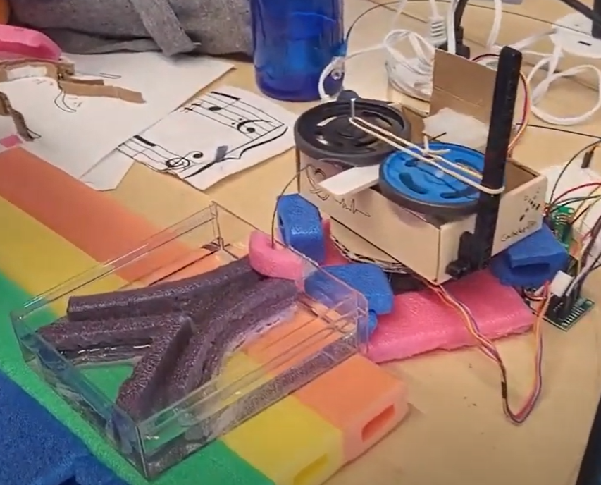
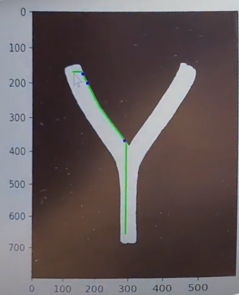

Autonomous Self-Navigating Catheter System
 Automate the manipulation and navigation of catheterization procedures!
Catheterization can be a very meticulous and tedious procedure for medical professionals to perform. This complete hardware + software package serves to make their lives easier by automating the entire process. First, using imaging of the blood vessels of concern, select a start point (where the catheter enters) and end point. The program will find the path the catheter must follow and generate instructions that the mechanism can then follow in order to get the catheter to its destination.
The mechanism is driven by a two DC motors controlling the feeding/retracting of the catheter, as well as three servo motors controlling the precise movement of the catheter.
Python, OpenCV, Arduino, C
GitHub Repository